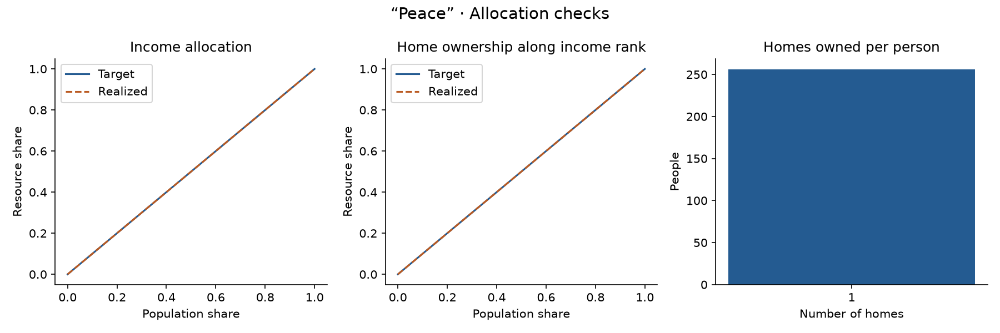
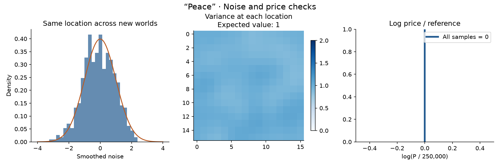
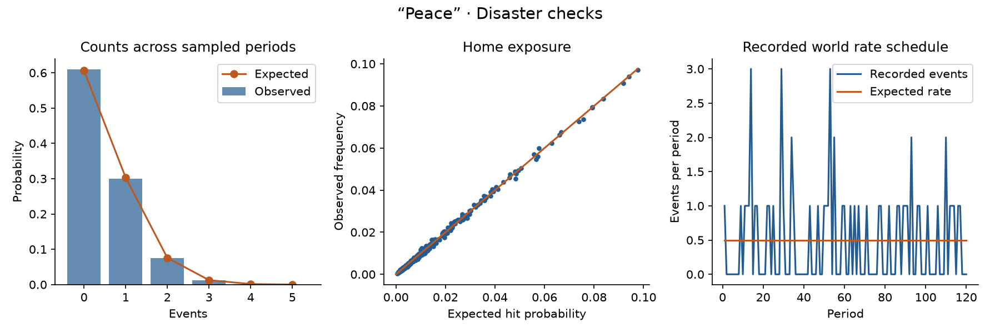
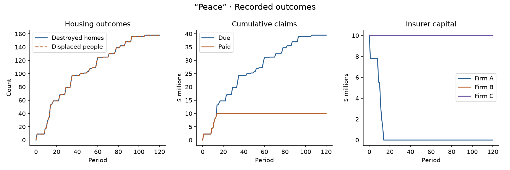
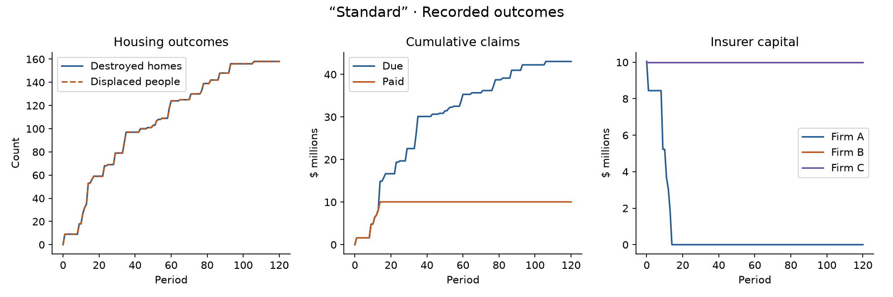
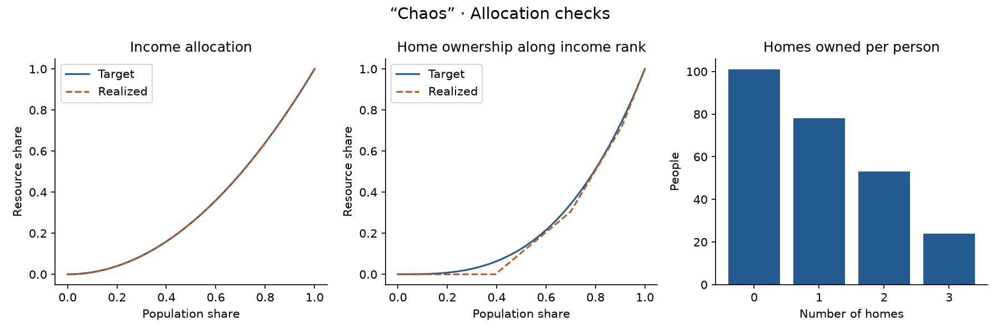
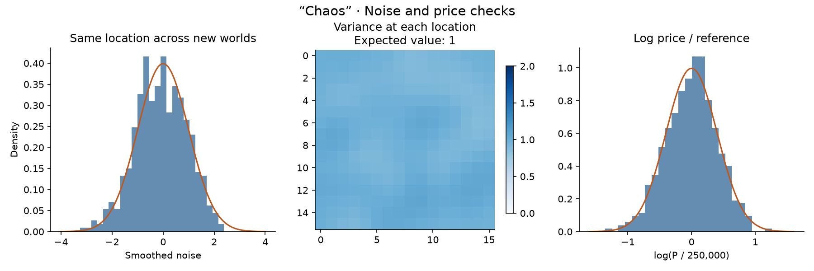
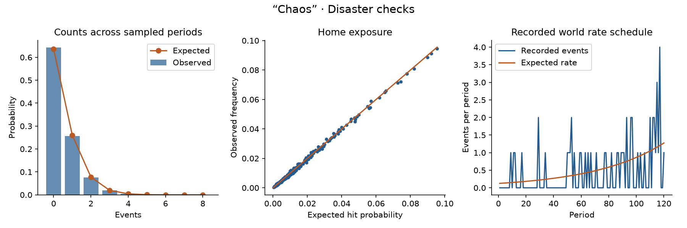
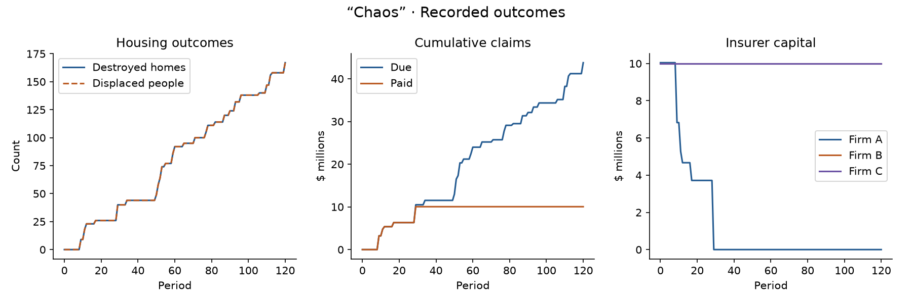

The same five checks for “Peace”, “Standard”, and “Chaos”: initial geography, resource
allocations,
noise and prices, disaster sampling, and recorded outcomes. Switch worlds to compare their
explanations and figures.
All worlds share the seed, population, initial cash budget, annual income budget,
insurer capital,
3 × 3 footprint, hidden risk field, insurance terms, and baseline policies. “Chaos” grows
tenfold from
its first-period rate to its last-period rate;
its expected event total matches the other worlds.
Scope of this study
Parameters are illustrative, not calibrated.
Income and rent currently settle each period;
the proposed 10/20-run payment clock is unfinished.
Agents do not yet receive public disaster history. These are fixed baseline policies, not
Q-learning.
Period zero is after opening premiums. Sampled statistical agreement supports the numerical tests;
it does not prove the model correct or establish causal findings from one seed.
“Peace”
Equal annual income, one owner-occupied home per person, equal initial cash, and identical initial home prices. Disaster risk is still spatially unequal. There is no redistribution after initialization.
16 × 16 homes · Seed 42 · 120 periods · Expected events 60.0 · Rate 0.500 → 0.500
Each square is a home. Orange maps show initial prices and the annual income of its resident. Purple shows the probability of at least one hit in the first period, including all overlapping 3 × 3 footprints. In “Chaos”, this probability increases over time. Color scales are labeled per panel; a uniform map means identical values, not missing data. PDF

The cumulative curves compare the intended resource distribution with the actual population. Income is allocated exactly in cents; ownership is rounded to whole homes while conserving the total. The bars include people with zero homes. “Peace” starts with equality; the other two worlds share the same unequal allocations. These describe initialization, before disasters. PDF

Generate 500 independent fields with the same settings and different seeds. Left: collect the center cell from each field; those values should follow the orange standard-normal curve. Middle: each cell measures variation at that fixed location across worlds, with expected variance 1. A single world need not itself have variance 1. Right: repeat with independently generated price fields. “Peace” has zero price spread, so every price is $250,000 and every log ratio is exactly zero; the other worlds target log-price variance 0.16. PDF

Left and middle use 20,000 fresh diagnostic periods, cycling through this world’s rate schedule without destroying homes. Observed samples should approach the expected curve and diagonal. For “Chaos”, the count expectation is a mixture of Poisson distributions at different rates—not a Poisson distribution at the average rate. Right shows the actual recorded world. Realized counts fluctuate; they need not rise every period even in “Chaos”. PDF

These charts use the exact snapshots shown in diagnostics. Destroyed-home and displacement lines overlap because everyone starts housed and there is no relocation or rebuilding. The gap between claims due and paid is a capital shortfall, not uninsured property loss. Fixed cheapest-affordable purchases concentrate coverage at Firm A; idle competitors keep their capital. One seeded trajectory illustrates behavior, not a general economic conclusion. PDF
“Standard”
Unequal income and ownership allocations, spatially varying prices, and income-based residence placement with noise. The disaster rate is constant.
16 × 16 homes · Seed 42 · 120 periods · Expected events 60.0 · Rate 0.500 → 0.500
Each square is a home. Orange maps show initial prices and the annual income of its resident. Purple shows the probability of at least one hit in the first period, including all overlapping 3 × 3 footprints. In “Chaos”, this probability increases over time. Color scales are labeled per panel; a uniform map means identical values, not missing data. PDFThe cumulative curves compare the intended resource distribution with the actual population. Income is allocated exactly in cents; ownership is rounded to whole homes while conserving the total. The bars include people with zero homes. “Peace” starts with equality; the other two worlds share the same unequal allocations. These describe initialization, before disasters. PDFGenerate 500 independent fields with the same settings and different seeds. Left: collect the center cell from each field; those values should follow the orange standard-normal curve. Middle: each cell measures variation at that fixed location across worlds, with expected variance 1. A single world need not itself have variance 1. Right: repeat with independently generated price fields. “Peace” has zero price spread, so every price is $250,000 and every log ratio is exactly zero; the other worlds target log-price variance 0.16. PDFLeft and middle use 20,000 fresh diagnostic periods, cycling through this world’s rate schedule without destroying homes. Observed samples should approach the expected curve and diagonal. For “Chaos”, the count expectation is a mixture of Poisson distributions at different rates—not a Poisson distribution at the average rate. Right shows the actual recorded world. Realized counts fluctuate; they need not rise every period even in “Chaos”. PDF

These charts use the exact snapshots shown in diagnostics. Destroyed-home and displacement lines overlap because everyone starts housed and there is no relocation or rebuilding. The gap between claims due and paid is a capital shortfall, not uninsured property loss. Fixed cheapest-affordable purchases concentrate coverage at Firm A; idle competitors keep their capital. One seeded trajectory illustrates behavior, not a general economic conclusion. PDF
“Chaos”
The same initial population, ownership, prices and hidden risk as “Standard”. Only the disaster-rate schedule changes: it grows exponentially. The schedule is normalized to match “Standard”’s expected total number of events.
16 × 16 homes · Seed 42 · 120 periods · Expected events 60.0 · Rate 0.127 → 1.275
Each square is a home. Orange maps show initial prices and the annual income of its resident. Purple shows the probability of at least one hit in the first period, including all overlapping 3 × 3 footprints. In “Chaos”, this probability increases over time. Color scales are labeled per panel; a uniform map means identical values, not missing data. PDF

The cumulative curves compare the intended resource distribution with the actual population. Income is allocated exactly in cents; ownership is rounded to whole homes while conserving the total. The bars include people with zero homes. “Peace” starts with equality; the other two worlds share the same unequal allocations. These describe initialization, before disasters. PDF

Generate 500 independent fields with the same settings and different seeds. Left: collect the center cell from each field; those values should follow the orange standard-normal curve. Middle: each cell measures variation at that fixed location across worlds, with expected variance 1. A single world need not itself have variance 1. Right: repeat with independently generated price fields. “Peace” has zero price spread, so every price is $250,000 and every log ratio is exactly zero; the other worlds target log-price variance 0.16. PDF

Left and middle use 20,000 fresh diagnostic periods, cycling through this world’s rate schedule without destroying homes. Observed samples should approach the expected curve and diagonal. For “Chaos”, the count expectation is a mixture of Poisson distributions at different rates—not a Poisson distribution at the average rate. Right shows the actual recorded world. Realized counts fluctuate; they need not rise every period even in “Chaos”. PDF

These charts use the exact snapshots shown in diagnostics. Destroyed-home and displacement lines overlap because everyone starts housed and there is no relocation or rebuilding. The gap between claims due and paid is a capital shortfall, not uninsured property loss. Fixed cheapest-affordable purchases concentrate coverage at Firm A; idle competitors keep their capital. One seeded trajectory illustrates behavior, not a general economic conclusion. PDF